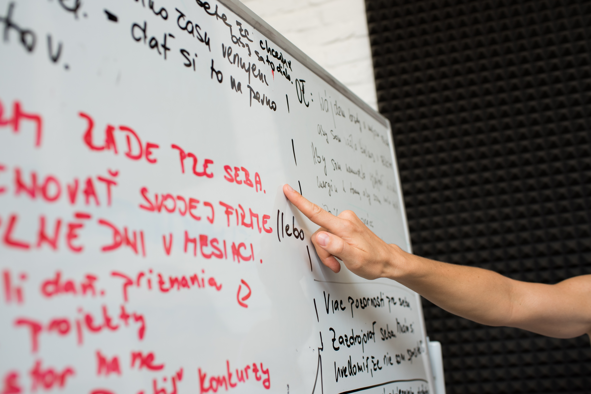

Pre lídrov a manažérov, ktorí prevzali tím — nie návod, ako ho viesť.
Mám záujem o program
Vedecky overená metodológia ktorá odhalí 34 prirodzených talentov človeka. Nie čo by mal robiť — ale čo mu ide prirodzene. Viac ako 30 miliónov ľudí po celom svete ju použilo na to, aby pochopili seba aj svojich ľudí lepšie. Využívajú ju organizácie vo viac ako 90 krajinách sveta — od globálnych korporácií po rýchlo rastúce firmy.
Väčšina lídrov sa do svojej roly dostala rovnako. Boli skvelí v tom, čo robili. Dostali tím. A zrazu sa od nich očakáva niečo úplne iné — viesť ľudí, motivovať, riešiť konflikty, dávať spätnú väzbu, delegovať. Bez príručky. Bez prípravy.
Výsledok? Vedú po svojom — intuitívne, bez systému, bez toho aby vedeli čo ich tím skutočne potrebuje.
Až 70 % rozdielu vo výkone a angažovanosti tímu závisí výlučne od manažéra.
Zdroj: Gallup, State of the American Manager, 2015
Nie je to ich chyba. Nikto ich to nenaučil.
A dnes na tom záleží viac než kedykoľvek predtým. AI čoraz viac preberá analytické a rutinné rozhodnutia — a to, čo lídrom zostáva, je presne to, čo stroj nevie robiť: viesť ľudí. Ako to robí, závisí od toho, z akého miesta koná. Zo strachu, alebo z istoty. A táto istota — alebo jej absencia — sa prenáša na celý tím, práve v čase, keď sa okolo neho mení všetko ostatné.
Preto sebapoznanie nie je luxus na vedľajšiu koľaj. Je to predpoklad na to, aby líder dokázal byť tou stabilnou vecou, ktorú tím práve teraz potrebuje.
vedú menší tím alebo oddelenie
dostali sa do leadership roly prirodzene — boli dobrí v tom, čo robili
cítia, že sa od nich veľa očakáva, ale nikto ich na vedenie ľudí reálne nepripravil
chcú lepšie rozumieť sebe, svojim ľuďom a tomu, čo od nich tím potrebuje
Program pozostáva z troch nadväzujúcich fáz. Každá má jasný výstup, s ktorým líder odchádza do praxe.
Líder spozná svoje Top 10 talentov v kontexte vedenia ľudí. Identifikuje svoj autentický leadership štýl, riziká a slepé miesta. Absolvuje 360° spätnú väzbu a vytvorí konkrétny Leadership Action Plan.
Líder sa naučí čítať ľudí v tíme — ich talenty, motivácie, potreby. Cez individuálne rozhovory a talent profily si vytvorí vlastný Leadership Blueprint pre každého člena tímu.
Líder sa pozrie na tím ako celok — kde sú silné stránky, kde sú riziká, kde on sám funguje ako limit. Výsledkom sú vedomé leadership rozhodnutia a záväzok, ktorý tím pocíti.
Tento program vznikol z vlastnej skúsenosti. Keď som prvýkrát viedla tím, nemala som žiadne nástroje — len intuíciu a veľa otáznikov. Zmenilo sa to až vtedy, keď som sama zažila, čo znamená byť dobre vedená. Líder, ktorý videl môj potenciál, pracoval so mnou individuálne a dal mi priestor rásť. Bola som postupne obsadená do dvoch rolí, ktoré vo firme predtým neexistovali.
Viem, čo first-time líder prežíva — pretože som si tým prešla. A viem, čo zmení, keď má správnu podporu — pretože som to na vlastnej skúsenosti zažila.
Program pozostáva z troch na seba nadväzujúcich modulov, pričom každý z modulov si môžete kúpiť aj samostatne. Cena zahŕňa aj Gallup CliftonStrengths All 34.
Za 40 minút zistíme, či to dáva zmysel — pre vás aj pre mňa.
Dohodnime si call